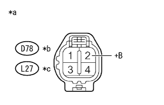

DTC P0037/27 O2センサヒータ性能低下B1S2 |
DTC P0038/27 O2センサヒータ過電流B1S2 |

| DTC No. SAE/TCCS | DTC検出条件
| 点検部位 |
|---|---|---|
| P0037/27 |
|
|
| P0038/27 |
|
|
参照。| 手順1 | オキシジェン センサ単体点検 |
参照(駆動方式:FF車))参照(駆動方式:4WD車))| 結果 | 飛び先 |
|---|---|
| 正常 | A |
| 異常(FF) | B |
| 異常(4WD) | C |
|
| ||||
|
| ||||
| A | |
| 手順2 | ワイヤハーネスおよびコネクター点検（オキシジェンセンサ ヒータ電源回路） |
参照。|  |
オキシジェンセンサのコネクターD78を切り離す。(駆動方式FF)
オキシジェンセンサのコネクターL27を切り離す。(駆動方式4WD)
IG ONにする。
SST(トヨタエレクトリカルテスター)を使用して、端子間の電圧を測定する。
| 点検端子 | 点検条件 | 基準値 |
|---|---|---|
| D78-2 (+B) - ボデーアース | IG ON | 11 to 14 V |
| 点検端子 | 点検条件 | 基準値 |
|---|---|---|
| L27-2 (+B) - ボデーアース | IG ON | 11 to 14 V |
| *a | 車両ワイヤハーネスコネクター前側 (オキシジェンセンサ接続コネクター) |
| *b | 駆動方式FF |
| *c | 駆動方式4WD |
|
| ||||
| OK | |
| 手順3 | ワイヤハーネスおよびコネクター点検（エンジンコントロールコンピュータ - オキシジェンセンサ） |
参照。オキシジェンセンサのコネクターD78を切り離す。(駆動方式FF)
オキシジェンセンサのコネクターL27を切り離す。(駆動方式4WD)
エンジンコントロールコンピュータのコネクターB37を切り離す。
SST(トヨタエレクトリカルテスター)を使用して、端子間の抵抗を測定する。(端子配列は参照)
| 点検端子 | 点検条件 | 基準値 |
|---|---|---|
| B37-3 (HT1B) - D78-1 (HT1B) | 常時 | 1 Ω未満 |
| 点検端子 | 点検条件 | 基準値 |
|---|---|---|
| B37-3 (HT1B) - L27-1 (HT1B) | 常時 | 1 Ω未満 |
| 点検端子 | 点検条件 | 基準値 |
|---|---|---|
| B37-3 (HT1B)およびD78-1 (HT1B) - 他の端子間およびボデーアース間 | 常時 | 10 kΩ以上 |
| 点検端子 | 点検条件 | 基準値 |
|---|---|---|
| B37-3 (HT1B)およびL27-1 (HT1B)- 他の端子間およびボデーアース間 | 常時 | 10 kΩ以上 |
|
| ||||
| OK | ||
| ||
| 手順4 | ワイヤハーネスおよびコネクター点検（オキシジェンセンサ - EFI MAINリレー） |
参照。オキシジェンセンサのコネクターD78を切り離す。(駆動方式FF)
オキシジェンセンサのコネクターL27を切り離す。(駆動方式4WD)
エンジンルームリレーブロックからEFI MAINリレーを取りはずす。
SST(トヨタエレクトリカルテスター)を使用して、端子間の抵抗を測定する。
| 点検端子 | 点検条件 | 基準値 |
|---|---|---|
| D78-2 (+B) - EFI MAINリレーホルダの3端子 | 常時 | 1 Ω未満 |
| 点検端子 | 点検条件 | 基準値 |
|---|---|---|
| L27-2 (+B) - EFI MAINリレーホルダの3端子 | 常時 | 1 Ω未満 |
| 点検端子 | 点検条件 | 基準値 |
|---|---|---|
| D78-2 (+B)およびEFIリレーホルダの3端子 - 他の端子間およびボデーアース間 | 常時 | 10 kΩ以上 |
| 点検端子 | 点検条件 | 基準値 |
|---|---|---|
| L27-2 (+B)およびEFIリレーホルダの3端子 - 他の端子間およびボデーアース間 | 常時 | 10 kΩ以上 |
|
| ||||
| OK | ||
| ||